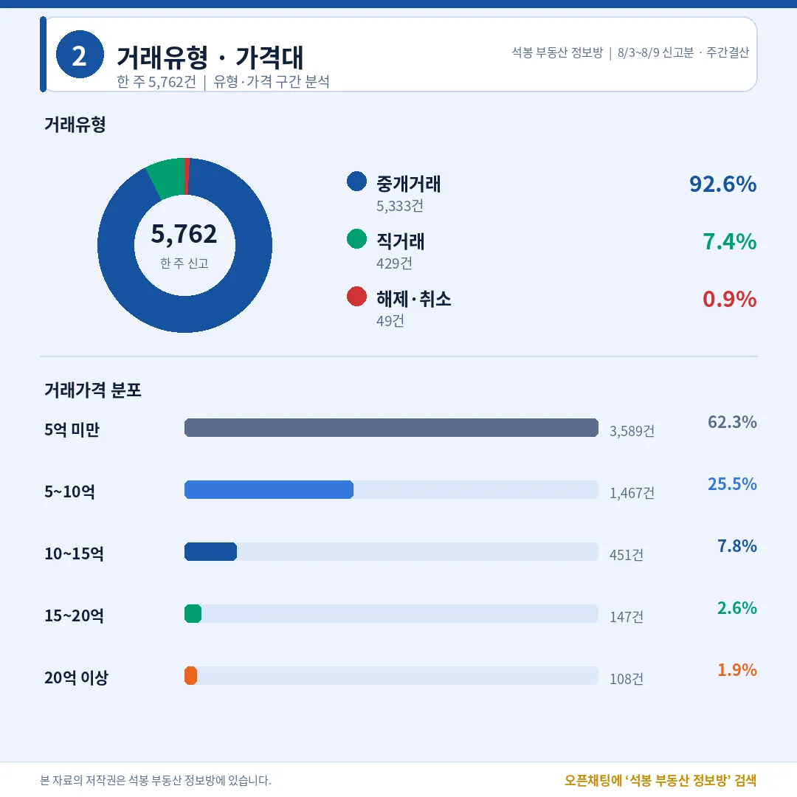
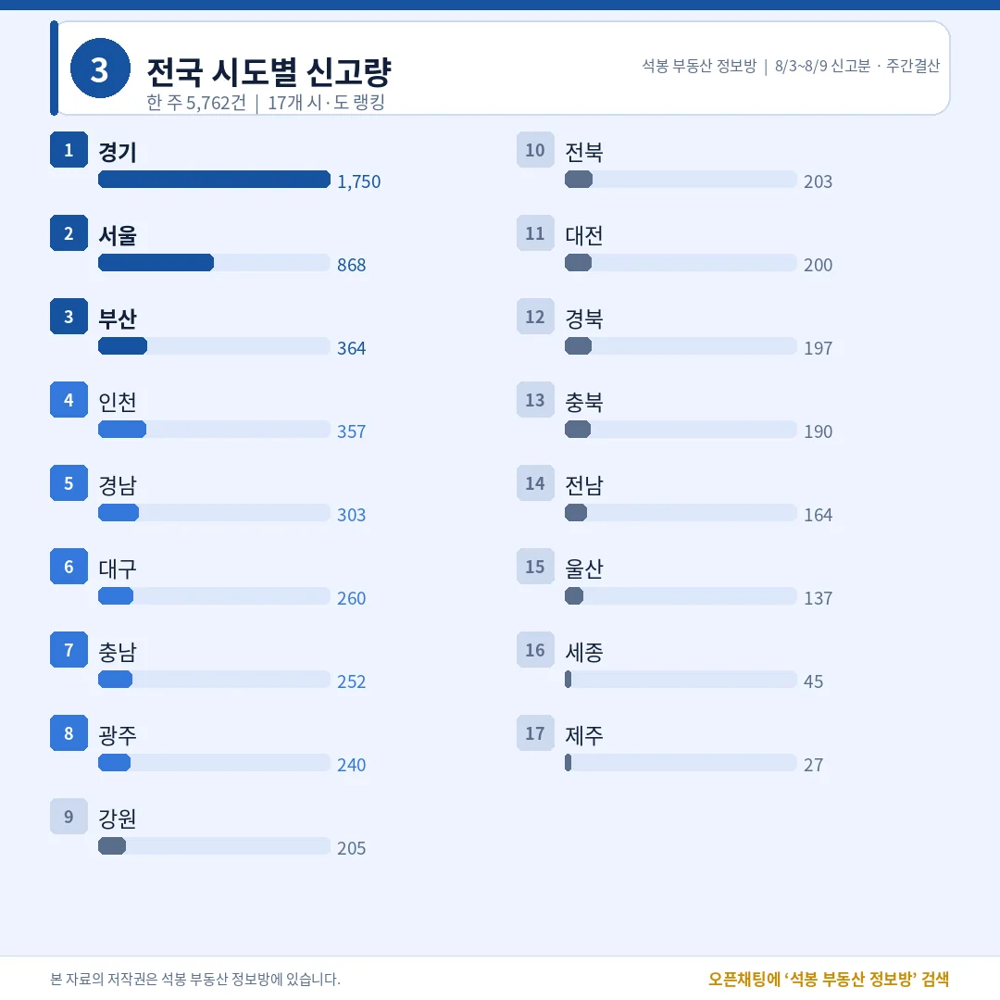
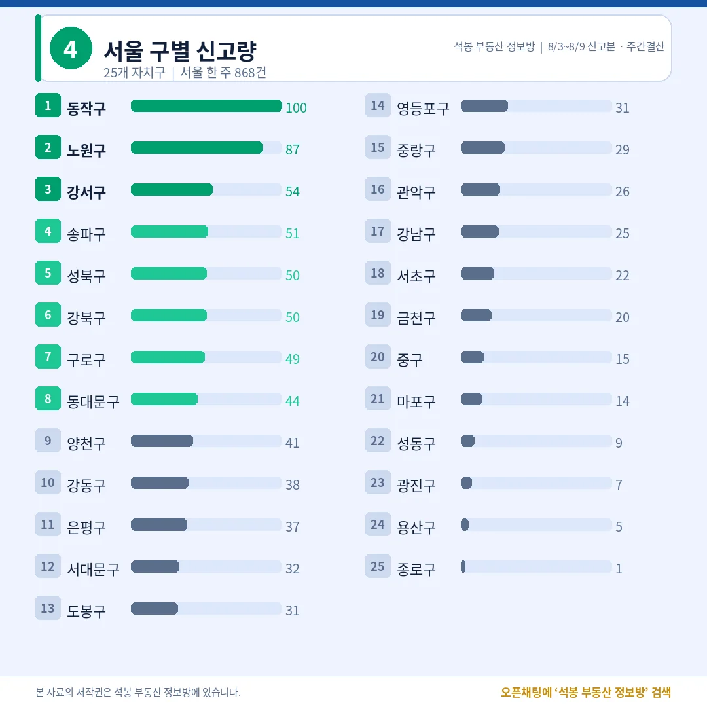
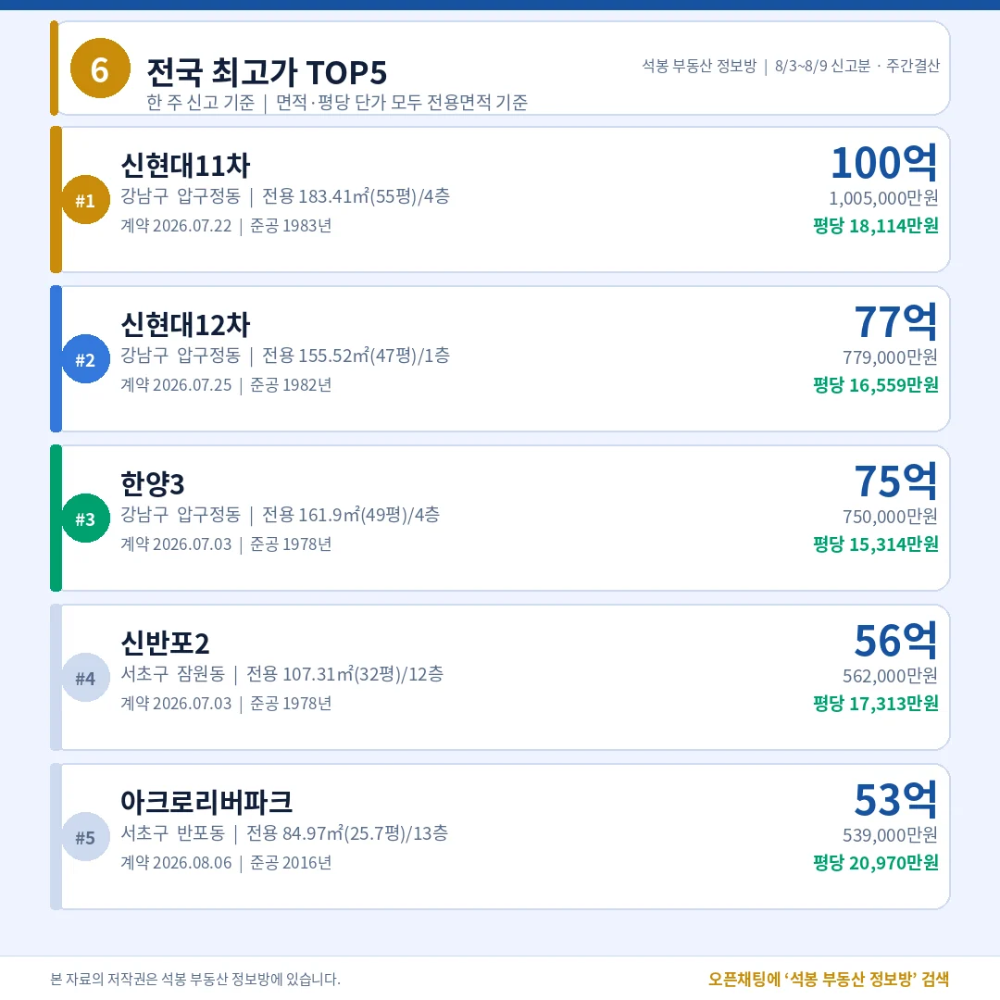
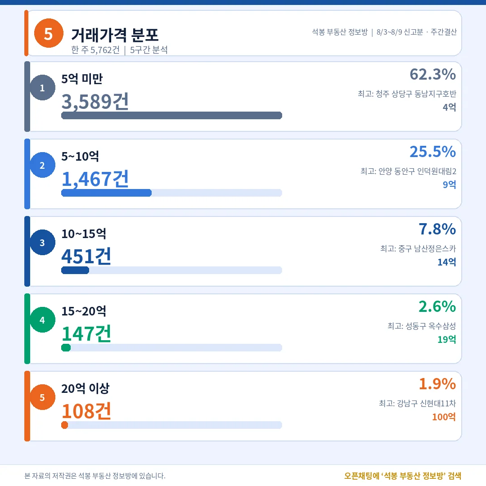
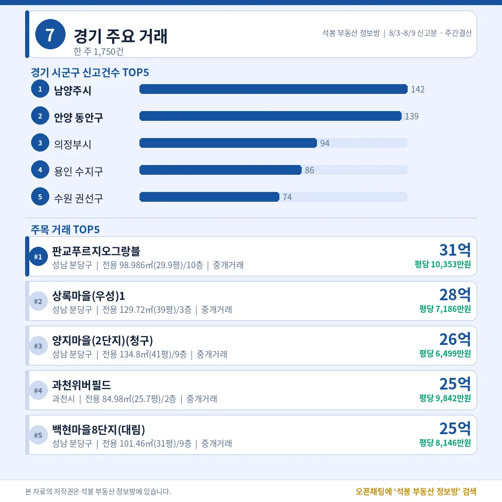
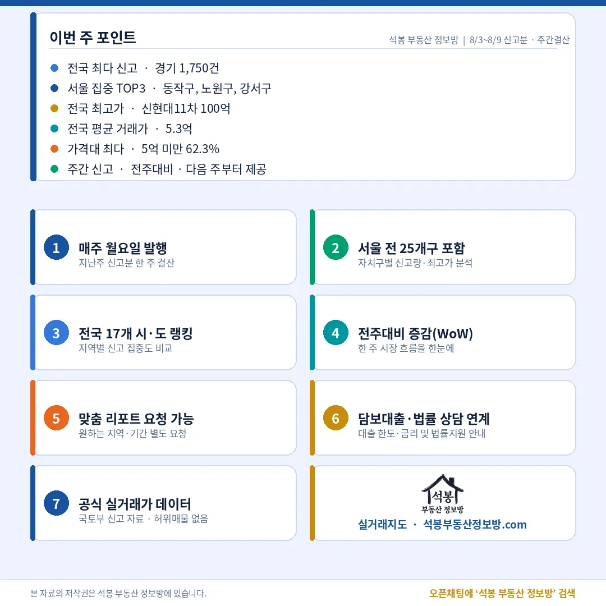

지난주(8월 3일~9일) 전국 아파트 실거래 신고는 5,762건이었습니다. 8월 5일자는 이번 집계에서 뺐습니다. 그날 우리 수집 지역이 129곳에서 243곳으로 늘면서, 새로 들어온 122개 시군구의 지난달 계약분 8,654건이 한꺼번에 실렸기 때문입니다. 하루치와 한 달치를 한 표에 섞으면 지역 순위가 통째로 뒤집힙니다. 그래서 기존 지역 기준 6일치로만 셌고, 전주 대비 증감은 8월 1일 자료가 비어 이번 회차에는 넣지 않았습니다.
단지명을 누르면 그 단지의 실거래 내역과 시세를 바로 볼 수 있습니다. (면적과 평당 단가는 모두 전용면적 기준)
5,762건 가운데 62.3%가 5억 아래, 직거래는 7.4%

거래유형·가격대
직거래 429건 중 65건이 한 단지에서 나왔습니다.
거래유형
건수
비중
중개거래
5,333건
92.6%
직거래
429건
7.4%
해제·취소
49건
0.9%
해제·취소는 신고 뒤 취소된 건이라 위 두 유형과 중복 집계됩니다. 공공기관 매입 65건을 빼면 직거래는 364건, 6.4%로 내려갑니다.
가격 구간
건수
비중
구간 최고 거래
5억 미만
3,589건
62.3%
청주 상당구 동남지구호반 4억
5~10억
1,467건
25.5%
안양 동안구 인덕원대림2 9억
10~15억
451건
7.8%
서울 중구 남산정은스카이 14억
15~20억
147건
2.6%
서울 성동구 옥수삼성 19억
20억 이상
108건
1.9%
서울 강남구 신현대11차 100억
비중은 해제·취소를 포함한 전체 신고 5,762건 기준입니다. 반올림 때문에 합계가 100%와 살짝 어긋납니다.
여기서부터는 회원에게 보여드립니다
카카오 로그인 3초면 전문을 읽을 수 있습니다. 무료입니다.
가입하시면 지역 시장조사 보고서(약식)를 2회 무료로 요청하실 수 있습니다.
이미 회원이면 같은 버튼으로 로그인만 됩니다
경기 1,750건에 수도권 51.6%, 서울 중위는 8.7억

시도별 신고량
서울과 경기의 중위값 차이는 3.4억이었습니다.
시·도
건수
비중
중위 거래가
주간 최고가
경기
1,750건
30.4%
5.3억
31.0억 (성남 분당구)
서울
868건
15.1%
8.7억
100.5억 (강남구)
부산
364건
6.3%
3.5억
19.4억 (남구)
인천
357건
6.2%
4.0억
13.6억 (연수구)
경남
303건
5.3%
2.3억
16.7억 (창원 의창구)
대구
260건
4.5%
3.0억
18.3억 (수성구)
충남
252건
4.4%
2.0억
7.4억 (천안 서북구)
광주
240건
4.2%
2.5억
10.9억 (남구)
나머지 9곳
1,368건
23.7%
지역 혼합 (산출 생략)
22.9억 (대전 유성구)
중위 거래가는 해제·취소를 뺀 5,713건으로 계산했습니다.
동작구 100건 중 65건이 공공기관 매입이었습니다

서울 구별 신고량
그 65건을 빼면 동작구는 35건, 서울 1위는 노원구 87건입니다.
자치구
건수
중위 거래가
평당 (전용)
비고
동작구
100건
3.5억
6,336만
공공기관 매입 65건 제외 시 35건·중위 14.8억
노원구
87건
6.5억
3,545만
최다 단지 5건, 쏠림 없음
강서구
54건
9.5억
4,383만
최다 단지 3건
송파구
51건
23.5억
9,483만
51건 중 31건이 20억 위
성북구
50건
10.0억
4,352만
최고 20.0억
강북구
50건
7.1억
2,831만
서울 최저 평당가 구간
구로구
49건
7.3억
3,306만
최고 16.3억
동대문구
44건
11.0억
4,907만
최고 21.4억
동작구 65건은 노량진동 신축 전용 18㎡(5.4평) 65세대를 공공기관이 7월 27일 같은 날 직거래로 사들인 건입니다. 8월 7일 원고에서 짚어 드린 그 물량이 주간 집계에도 그대로 들어왔습니다.
압구정동이 1·2·3위, 평당 1위는 반포 2억 970만원

전국 최고가 TOP5
총액 순위와 평당 순위가 서로 반대로 섰습니다.
순위
단지
위치
거래가
전용면적 · 평당(전용)
1
신현대11차
강남구 압구정동
100.5억
전용 183.41㎡(55.5평) 평당 18,114만원
2
신현대12차
강남구 압구정동
77.9억
전용 155.52㎡(47.0평) 평당 16,559만원
3
한양3
강남구 압구정동
75.0억
전용 161.9㎡(49.0평) 평당 15,314만원
4
신반포2
서초구 잠원동
56.2억
전용 107.31㎡(32.5평) 평당 17,313만원
5
아크로리버파크
서초구 반포동
53.9억
전용 84.97㎡(25.7평) 평당 20,970만원
총액 5위인 아크로리버파크가 평당으로는 1위입니다. 압구정 세 곳은 1978~1983년 준공에 전용 47평이 넘는 대형이고, 아크로리버파크는 2016년 준공 25.7평이라 단가가 갈립니다.
20억 위 108건 중 송파 31건, 강남·서초를 합친 29건보다 많았습니다

거래가격 분포
송파는 51건 중 31건이 20억 위였고, 전부 중개거래였습니다.
지역
건수
중위
최고
평당 중위(전용)
송파구
31건
32.0억
42.3억
11,501만원
강남구
15건
29.0억
100.5억
13,625만원
서초구
14건
34.3억
56.2억
14,106만원
성남 분당구
10건
22.9억
31.0억
7,666만원
양천구
6건
23.3억
26.5억
12,072만원
수원 영통구
5건
20.5억
25.0억
6,796만원
20억 위 108건은 서울 88건, 경기 18건, 대전 2건으로 갈렸습니다. 송파 31건은 계약일이 7월 안에서 여러 날짜로 흩어져 있어 한 건물 일괄 신고가 아닙니다.
경기 상단은 판교 31억, 비수도권 상단은 대전 22.9억

8 · 경기/부산 주요 거래
비수도권 1위는 부산이 아니라 대전이었습니다.
권역
단지
위치
거래가
평당(전용)
경기
판교푸르지오 그랑블
성남 분당구 백현동
31.0억
10,353만원
경기
과천위버필드
과천시 원문동
25.3억
9,842만원
인천
디에트르송도 시그니처뷰
연수구 송도동
13.6억
3,896만원
대전
스마트시티 2단지
유성구 도룡동
22.9억
5,609만원
부산
더블유
남구 용호동
19.4억
5,448만원
대구
힐스테이트범어
수성구 범어동
18.3억
7,124만원
충북
신영지웰시티 1차
청주 흥덕구 복대동
17.2억
3,496만원
경남
창원중동 유니시티4단지
창원 의창구 중동
16.7억
4,002만원
경기 상단은 판교푸르지오그랑블이 전용 29.9평에 31억, 평당 1억을 넘겼습니다. 비수도권에서 평당이 가장 높은 곳은 대구 범어동 7,124만원이었습니다.
전국 중위 3.8억에 서울 8.7억, 지난주가 남긴 것

이번 주 포인트
지난주 표를 겹쳐 놓으면 고가 시장의 무게중심이 한 칸 옮겨 앉은 게 보입니다. 총액 상단은 여전히 압구정동이 1·2·3위를 쓸어 갔지만, 20억 위 거래를 건수로 세면 송파구가 31건으로 강남구와 서초구를 합친 29건보다 많았습니다. 송파의 31건은 리센츠, 파크리오, 잠실엘스, 트리지움처럼 여러 단지에 흩어져 있고 계약일도 7월 안에서 여러 날짜로 퍼져 있습니다. 한두 건물이 만든 착시가 아니라, 20억대에서 30억대 초반 물건이 실제로 여러 곳에서 손바뀜한 결과로 읽힙니다.
반대편도 같이 봐야 균형이 맞습니다. 전국 중위 거래가는 3.84억이고 5억 아래가 62.3%입니다. 서울 중위 8.7억, 경기 5.3억과 나란히 놓으면 같은 주에 서로 다른 시장 세 개가 돌아간 셈입니다. 동작구 사례처럼 공공기관이 한 번에 65세대를 사들이면 한 자치구 순위가 통째로 바뀌니, 건수 랭킹은 늘 그 안에 무엇이 들었는지 열어 보고 읽는 편이 안전합니다.
표 보는 법 · 직거래는 중개사를 끼지 않고 당사자끼리 한 거래입니다. 면적과 평당 단가는 모두 전용면적 기준이고, 평은 ㎡를 3.3058로 나눈 값입니다. 중위 거래가는 그 지역 거래를 금액순으로 줄 세웠을 때 한가운데 값이라 평균보다 체감에 가깝습니다. 건수와 비중은 해제·취소를 포함한 전체 신고 기준, 중위·평균은 해제·취소를 뺀 값입니다. 이번 회차는 8월 5일 신고분을 제외한 6일치이며, 그날 새로 수집 대상이 된 122개 시군구의 지난달 계약분은 다음 회차부터 정상 반영됩니다.
원자료: 국토교통부 실거래가 공개시스템 (2026년 8월 3일~9일 신고분 중 8월 5일 제외 6일치 기준) · 편집·제작: 석봉 부동산 정보방 · 신고분은 계약일과 신고일이 다를 수 있으며 해제·취소 건이 뒤늦게 반영될 수 있습니다 · 본 자료는 정보 제공 목적이며 투자 권유가 아닙니다.